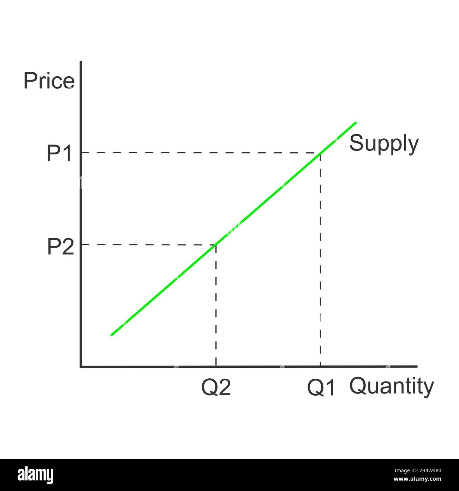

| 🌸 Lesson — Ano ang Supply sa Ekonomiks? |

Kahulugan ng Supply
Ang supply ay ang dami ng produkto o serbisyo na kaya at handang ipagbili ng mga prodyuser o negosyante sa isang takdang presyo at panahon. Hindi lahat ng kayang gawin ng prodyuser ay maituturing na supply — dapat handa itong ibenta sa merkado.
Batas ng Supply (Law of Supply)
"Kapag tumaas ang presyo, tumataas ang supply. Kapag bumaba ang presyo, bumababa ang supply."
Ibig sabihin, may direktang relasyon sa pagitan ng presyo at dami ng supply. Mas mataas ang presyo = mas malaki ang kita, kaya mas ganado ang prodyuser na mag-supply.
Supply Schedule (Halimbawa)
Presyo at dami ng ipagbibiling produkto:
- ₱20 — 10 na yunit
- ₱30 — 25 na yunit
- ₱40 — 40 na yunit
- ₱50 — 60 na yunit
Supply Curve
Ipinapakita sa grap ang relasyon ng presyo at supply. Karaniwan, pataas ang linya mula kaliwa pataas sa kanan dahil direct relationship ito. Kung gusto mong dagdagan ang produksyon kapag tumaas ang presyo, makikita ito sa curve.
Mga Salik na Nakaaapekto sa Supply
- Presyo ng Produkto — Mas mataas na presyo = mas maraming supply.
- Presyo ng Input — Kapag tumaas ang gastusin sa produksyon, bumababa ang supply.
- Teknolohiya — Mas advanced na teknolohiya = mas mabilis na produksyon.
- Buwis at Subsidy — Buwis ay nagpapababa ng supply, subsidy ay nagpapataas.
- Bilang ng Prodyuser — Mas maraming negosyante = mas mataas ang supply.
- Panahon o Klima — Masamang panahon = mababang supply (lalo sa agrikultura).
- Ekspektasyon ng Presyo — Kapag inaasahang tataas ang presyo, minsan ay iniipon muna ng prodyuser ang produkto.
Paggalaw vs. Paglipat ng Supply Curve
Paggalaw sa Curve (Movement) — Dahil sa presyo lamang.
Paglipat ng Curve (Shift) — Dahil sa ibang salik tulad ng klima, buwis, teknolohiya, at iba pa.
Halimbawa sa Totoong Buhay
Kapag tumaas ang presyo ng sibuyas, mas maraming magsasaka ang magtatanim kaya tataas ang supply. Kapag nagkaroon ng bagyo, bumababa ang ani kaya bumababa ang supply ng gulay. Kung tumaas ang presyo ng cake, mas mabilis dagdagan ng baker ang supply upang kumita ng mas malaki.
Mga Konseptong Dapat Tandaan
- Supply ≠ Produksyon lamang — dapat handang ibenta.
- Prodyuser — tagagawa o nagbebenta ng produkto.
- Ceteris Paribus — "all things being equal," ginagamit kapag presyo lang ang pinagbabatayan.